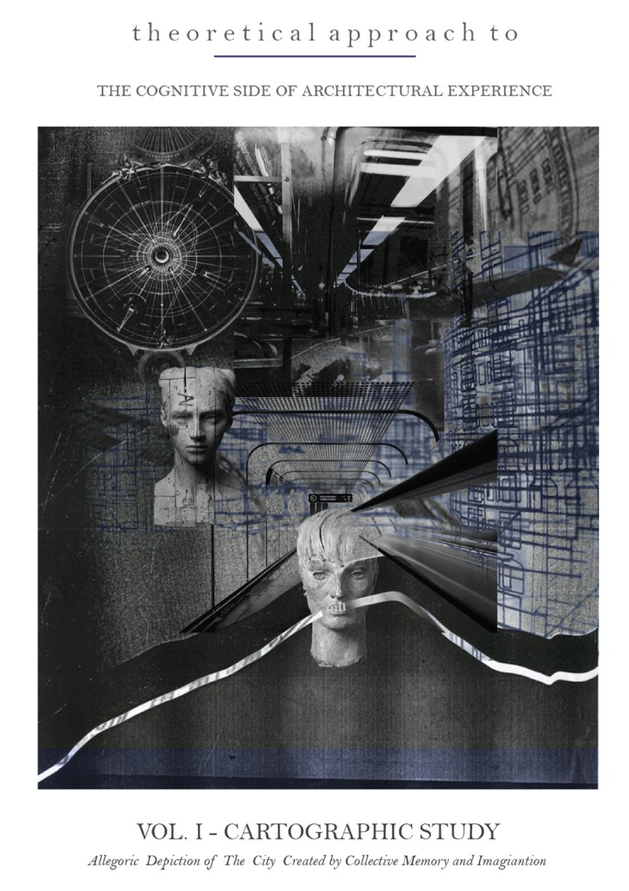
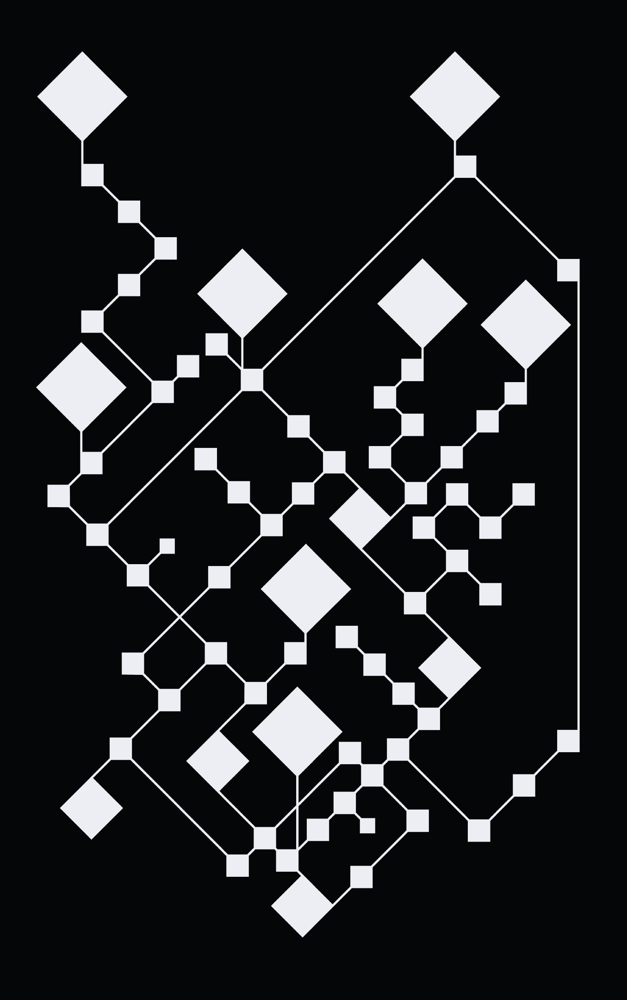
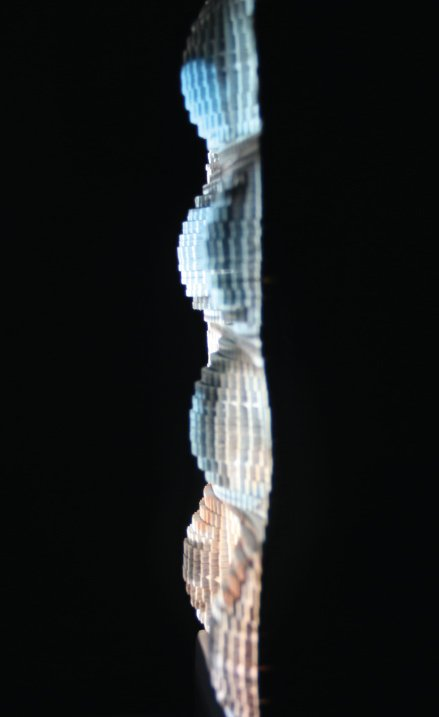

01Memory Mapping
Research & Digital Mapping

02Tilted
Interactive Installation

03Dynamic Facades
AI Projection Mapping on Facade
04.jpg)
"Thank You" Particle Simulation
AI image generation with sound and particles

01Research & Digital Mapping

02Interactive Installation

03AI Projection Mapping on Facade
04AI image generation with sound and particles